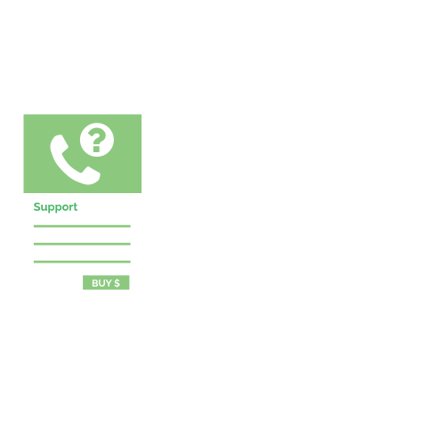
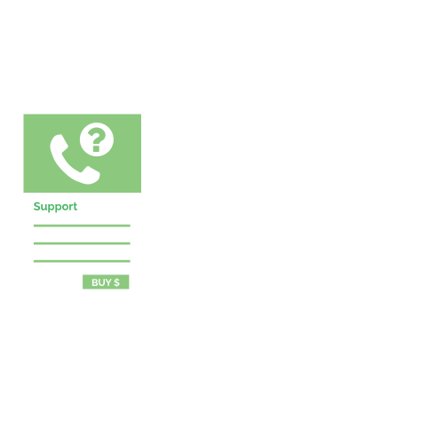

Our team is spread out across North and South America. We have two offices, one in Kansas City and another in in Toronto.
Adrian D'Alimonte
Product Designer
I'm a creative problem solver, and my solutions arrive through a mix of visual design, usability and code. I like sketching out ideas to spark a debate, as much as creating a pixel-perfect interface. My three staples in life are coffee, video games, and funny cat GIFs.
Alan
ClaytonProduct Management
I work with the content team to help shape and deliver products that enable our users to build amazing content. You can find me on LinkedIn
Alex Deaconu
Developer
I’m a full-stack developer at Rise. For me, programming is something that started as a hobby and it has become a profession. I think it can be likened to puzzles for adults. You can checkout my work at github.com/alex-deaconu.
Alexey Konavlov
Developer
Trained mathematician turned software developer, with the company since 2000.
Responsible for the overall system architecture, public APIs and looking after the needs of 3rd party developers who use these APIs. Passionate about conquering complexity, data analysis and server-side technologies.
Ashleigh Almeida
Customer Success Manager
I am a developer managing the community here at Rise. Outside the realm of code and troubleshooting I enjoy salmon sashimi, kittens, dreaming and journeying.
Blake Freeman
Support & QA
I have been a member of the support team at Rise since 2014. I’ve always enamored with technology, and couldn’t be happier to be in the field of technology and support. When I’m not working I like to spend time with my wife and our rescue dogs, or learning a new Yo-Yo trick.
Brian Loosbrock
Product Management
I look after the direction and management of our Digital Signage Store. I’m always interested in the details and figuring out how to get it all organized. There’s no substitute for rolling up your sleeves and getting involved. You can find me on LinkedIn.
Bridget Magnusson
Administration
As an Administrative Assistant, I have a wide variety of responsibilities. I may be known as “The Enforcer” in the accounting department because my #1 priority is collections. I also help coordinate shipments and trade shows. In my down time, I enjoy family time and running.
Byron Darlison
Product Management
I look after product direction and management. I am most interested in the technology, systems, and processes that allow us to create the best software in the shortest time to market possible. On occasion I have been known to post on my personal site at www.darlison.com.
Donna Peplinskie
Developer
I’m a front-end web developer and developer advocate for Rise Vision. I’m founder of WP Review Plugins. I blog about web development at donnapeplinskie.com. You can also find me on the social web at Google+, Twitter, GitHub, LinkedIn, or Stack Overflow.
Ezequiel Conte
Developer
I am a full-stack developer passionate about new technologies and innovation, focused on delivering high quality software and a great experience for our clients. When I disconnect, I enjoy spending time outdoor with my wife and son.
Francisco Vallarino
Developer
I'm a full-stack software developer at Rise, with broad experience in frontend and backend technologies and a strong passion for doing and learning new things every day. When I'm not working, I like playing music, swimming and dancing.
Ghislaine Guerin
UX Designer
I’m a designer with a passion for technology. I strive to create design that is user-centered, driven by data, and most importantly based on collaboration. When I’m not working, I’m usually outdoors, running or taking photos.
Grant Matabaran
Creative
I have been working with the creative team as a designer since 2010. When not working, I like adventure sports and traveling to new places whenever I get the opportunity.
Hannah Suarez
Customer Success Manager
I am here to help enable users across the wide spectrum of technology including open source, software, hardware, web applications and more. You can find me on GitHub and find out more about what interests me on my website. When I am not online or doing things with tech, I am most likely exploring something or somewhere new.
Jason Berberich
Project Management
Ensuring that client projects move smoothly and on time is my #1 priority. Your hardware needs to be shipped, installed and configured – I’m your guy. Being with Rise since 2008 has provided me many opportunities to travel, meet new people and learn the ‘technology what ifs’ and ‘that’s how it works’ that I never dreamed of when starting my professional career.
Juanito Abelo
Creative
I am a web developer that has been with Rise since 2011. I work with the creative team, turning digital signage designs into working presentations. I have passion for web development and WordPress. In my free time, I enjoy catching up on the latest development trends and spending time with my family.
Justin
SmithSupport & QA
I’ve been with Rise since 2012 as a member of the Support team. Most of my free time is spent with my wife and daughter. I enjoy going to concerts, playing guitar, camping/fishing, and going to the range. You can find me on LinkedIn.
Manish
JainController
I look to shake up the boring world of accounting by bringing it online and into the future. I am a CPA, doing accounting for last thirty years and working with Rise Vision since 2005. I love spending my spare time with my family, watching TV and reading financial news.
Mary
RazekAccounting
I have been in accounting for over 40 years and am semi-retiring as of 10/31/14. However, I will still be working part time sending invoices and working with the customers regarding any billing issues.
Mat
MeiersCreative
I have been with Rise since 2007 and have 10 years of experience in creative web design. I am a hard worker and like learning new techniques. I am an avid Sporting KC fan (that’s soccer) and enjoy working on my m3 (that’s a BMW) and eating bananas (yes, bananas) badforbananas.com.
Matthew Fisher
Support & QA
I’ve been working with technology and its secure application for over twenty years. When not advocating, supporting or developing free software; I enjoy all manner of science fiction, classic samurai movies, and spending time with my family.
Oleg Khasimkhanov
Developer
I enjoy working for Rise Vision because here I am surrounded by professionals charged with passion, energy, and a desire to create. I’m passionate about software development and everything about technology. On weekends you can spot me doing water sports, camping, hiking, cycling, running, playing guitar and searching for purpose in life :)
Ray
DurkinSupport
I’ve been involved in the tech world since I was very young and hold 3 US patents. The best part of my job is watching the light bulbs go on when training new clients – I love that part. Away from Rise, for fun, my wife and I operate Happy Valley Farm – a small, pick your own berry farm.
Robert
PriceSupport & QA
I’ve been working with Rise Vision in both the Support and QA teams since 2005. When I’m not working, I’m either playing my drums, getting tattoos or reading.
Rodrigo Pavezi
Developer
I’m a full-stack developer at Rise Vision who loves coding and delivering quality work. I’m also passionate about Open Source software and learning new technologies. When I’m not working I usually enjoy my time doing some sports, such as surfing, swimming and cycling. You can find me on Bitbucket, Github , Google + and LinkedIn.
Ryan
CahoySales & Marketing
I look after sales, marketing, and business development. I enjoy working with our strategic partners to bundle our free platform and identify value added products and services that can be sold to other users through our store . You can find me hanging around our social media streams on Twitter, Facebook, Google +, and Linkedin.

Ryan Pet Arreza
Developer
I am a WordPress Developer with 5+ years of experience creating custom WordPress Themes. I have been working at Rise since 2010. When not working, I enjoy designing T-shirts and reading posts and tutorials related to web development and WordPress.
Shea Darlison
Marketing
I currently manage marketing here and when I'm not working I am in school at Dalhousie University in their Commerce program. www.sheadarlison.com
Stuart
LeesDeveloper
I’m a front-end and aspiring full-stack developer with a long background in Adobe Flash and Flex. Big advocate for open source software and I particularly enjoy contributing to the Rise Vision platform. You can find me on GitHub and on the usual social media streams via my website at One Pixel Left.
Tyler Johnson
Developer
I’ve been leveraging software to provide effective business advantages for over twenty years. Here at Rise Vision I work with Java and AngularJS to improve our App Engine-based digital signage software. I’m a big believer in continuous self-guided education and try to make sure I learn something new every day. Some favourite books are SICP, Clean Code, and JavaScript Allongé.
Vesna
JocicCreative
I’m a front-end web developer and graphic designer who loves to code and create in equal measure. What matters to me most is collaborating with teammates and clients to produce thoughtful work, striving to bring a fresh perspective to design problems large and small, and creating user experiences that inform, engage, and delight — regardless of the platform.